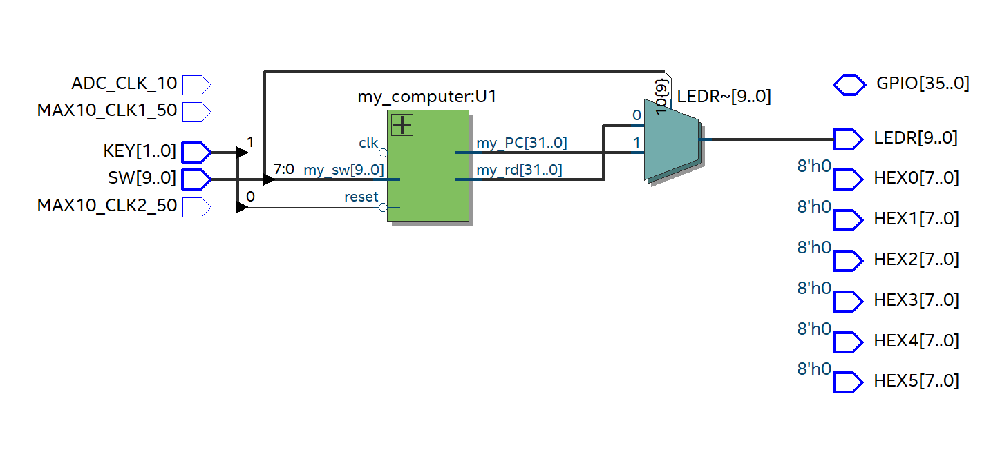
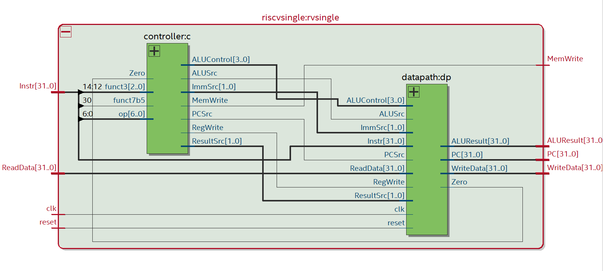
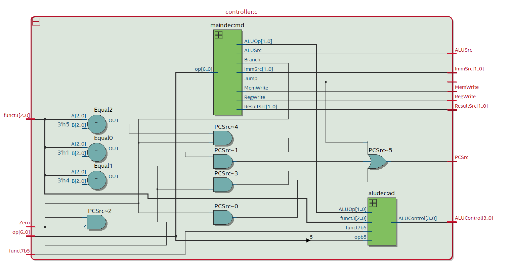
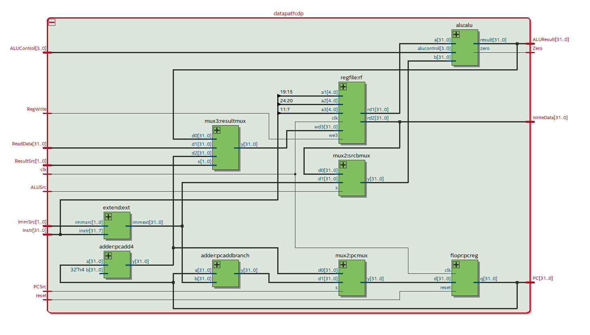
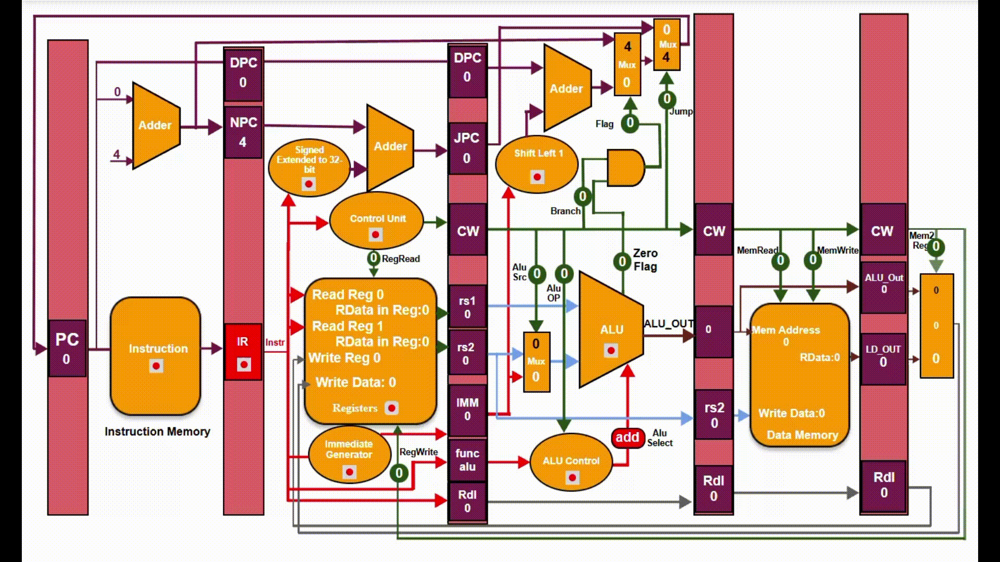
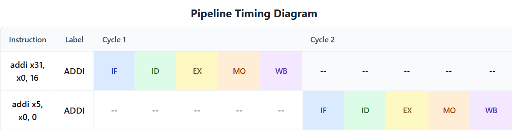

Background
This FPGA exploration was part of my Computer Engineering Design Lab 2 course, in which we heavily studied computer architecture. Here, we implemented a RV32I single-cycle core with 23 total instructions including arithmetic and branch logic instructions. This was implemented onto the DE-10 Lite FPGA, on the Intel Quartus Prime design software. The final goal was to calculate the Fibonacci sequence (starting from 0 & 1) for 15 iterations. This was done recursively using branch logic instructions.
Technical Overview
The FPGA is programmed in such a way that allows a user to increment the program counter (PC) to step through each execution instruction of the program. To do so, the on-board buttons and switches are utilized for control, while the LEDs display either the current PC value or a value stored in memory:
Key[0]: Resets the Program Counter.
Key[1]: Increments the Program Counter.
Sw[9]: ON: LEDs displays the Program Counter OFF: LEDs displays the contents of the memory address selected based on the switches.
SW[7:0]: Select which memory address is selected to display data on LEDs when SW[9] is ON
With this scheme, the user can view how the RV32I core recursively calculates the Fibonacci sequence one instruction at at time.
For loading a program, a simple .txt file is loaded as a ROM where each instruction is pasted as machine code (fixed 32-bit length). We used the online simulator Venus to write a RISC-V assembly program, then used the built-in converter to get the machine code. From here, we could upload to the DE-10 from Intel Quartus and begin incrementing the PC.

Technical Overview
For this project, our goal was to implement 10 additional arithmetic and branch logic instructions within the RV32I single-cycle core. These included xor, xori, sll, slli, srl, slli, srl, srli, sra, bne, blt, & bge. Our ALU handled some of these instructions directly, while others required our datapath to determine the next PC value depending on branch logic outputs.
Below is our assembly program:
addi x31, x0, 16 # Fibb(15)
addi x5, x0, 0 # increment
addi x6, x0, 0 # x6 is result register
addi x7, x0, 1 # x
addi x8, x0, 0 # y
recheck:
bne x5, x31, loop # if less than 16 iteration, go to loop
beq x5, x31, exit # if not, go to exit. (break)
loop:
sw x8, 0(x29) # store in memory location on loop
addi x9, x7, 0 # x9 is temp, temp = x
add x7, x7, x8 # x = x + y
addi x8, x9, 0 # y = temp
addi x5, x5, 1 # increment++
slli x29, x5, 2 # increment * 4 to put into memory
bne x5, x31, recheck # go back to main check
exit: In the way this is written, each calculated Fibonacci number writes from 0x0 to 0xF in order, then exits. This may cause memory corruptions within Venus and some other RISC-V simulators, in which the program writes over itself, but in real world testing our program is stored away from these memory addresses within the RAM stack. Solving this within the simulator involves just changing the offset of register x29 to 64.

The RTL viewer within Quartus allows us to see our RV32I machine in full. Above is the topmost RTL layer where we see how the internal clock as well as the physical inputs (buttons & switches) interact with the SystemVerilog modules.

Deeper into the RTL viewer we can see the RV32I core itself, consisting of the main controller and the datapath.

Within the controller we have our binary instruction inputs which are decoded for the determining ALU, write, and branch operations.

The datapath then contains the ALU itself and writes to memory accordingly, as well as setting the PC. From here, the cycle repeats!
Results

The program when executed in full runs through ~168 total cycles to calculate Fibb(0) through Fibb(15). The majority of those cycles involve branching from recheck to loop and vice versa. The above gif demonstrates the PC moving from 0 -> 60, then from 24 -> 60 and 60 -> 24. Important to note is that this diagram shows a pipelined CPU, whereas ours operates in single-cycle format. This is merely meant to show our PC in action.
Below shows our pipelining diagram for the first 2 instructions, in which we can see how this is strictly as single-cycle CPU, in which each clock cycle goes through all 5 stages of the pipeline before another instruction is fetched.

Below shows a video demonstration of the physical operation of the FPGA:
Below is a full dump of the RV32I log per instruction for the entire program execution:
Failed to load file.